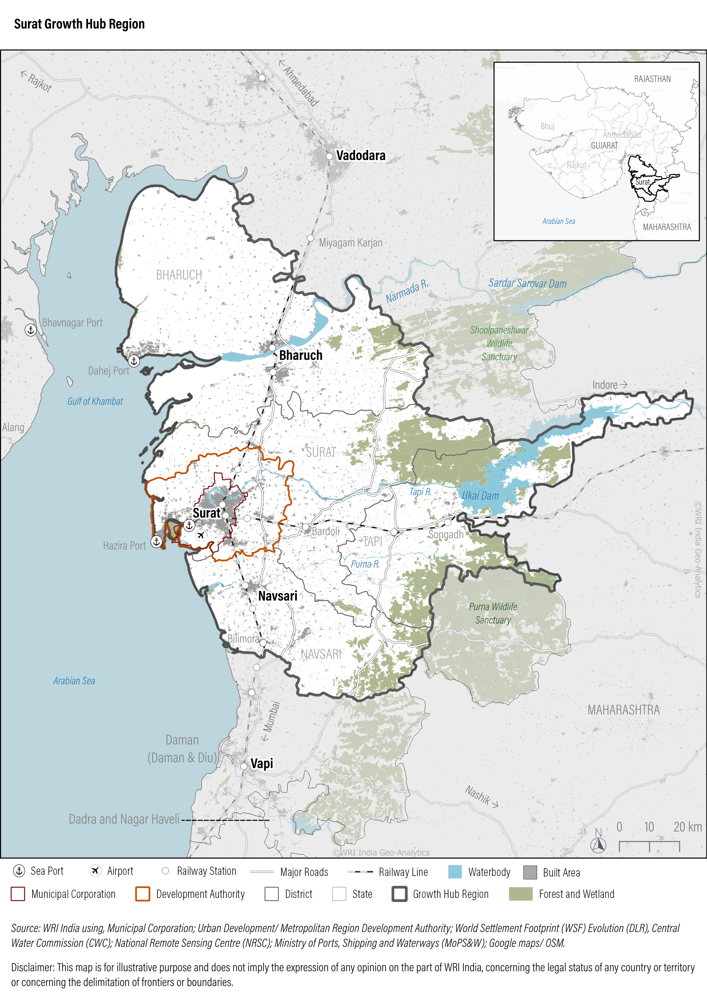
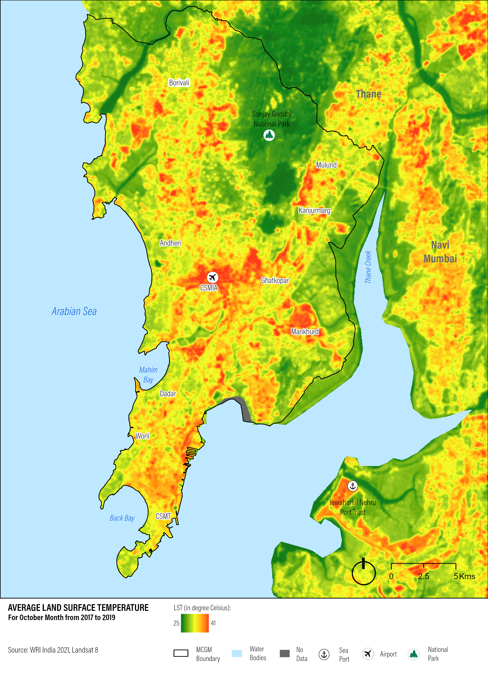
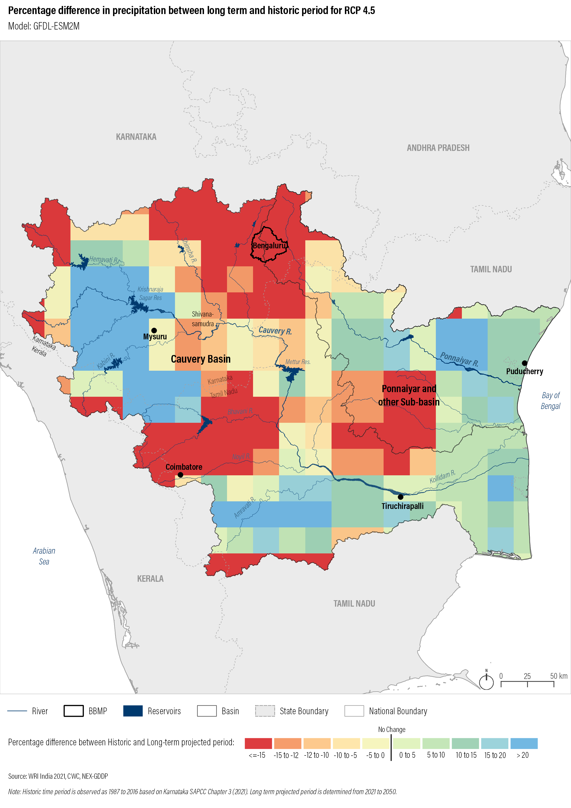
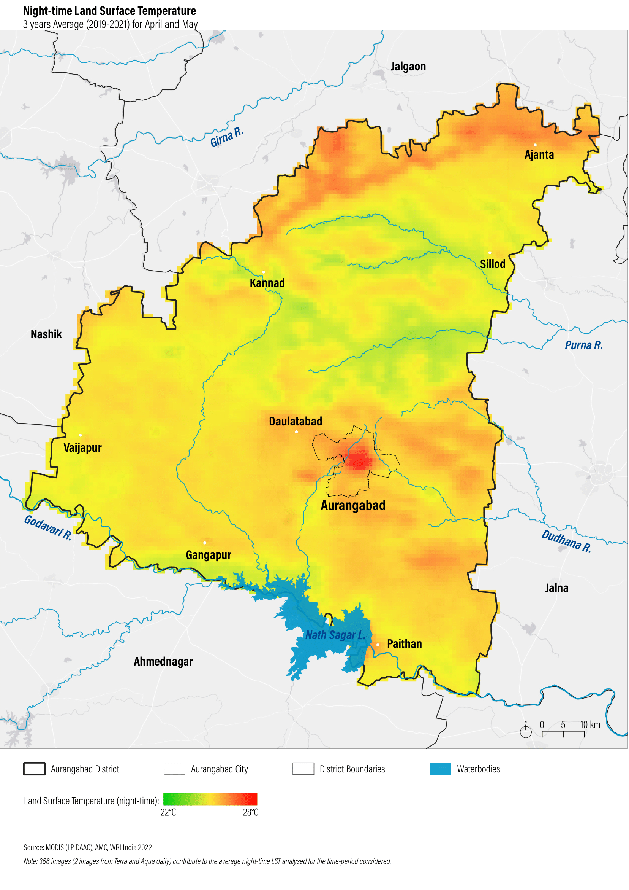

About Me
Hello! I'm Jyoti, a passionate Remote Sensing and GIS professional with 5+ years of progressive experience in geospatial analysis, climate data processing, and project coordination across environmental, urban planning, and market strategy domains. I leverage tools like ArcGIS, QGIS, Python, and Google Earth Engine to derive insights from geospatial data.
I am highly passionate about applying geospatial intelligence to solve real-world challenges and support sustainable development goals
My Projects
This section features a collection of my published reports and articles, along with a selection of personal maps and visualizations created during the annual 30-Day Map Challenge. Feel free to explore, and don’t hesitate to reach out with any thoughts, questions, or feedback!
Tamil Nadu Heat Mitigation Strategy

This work formed the scientific foundation for Tamil Nadu’s statewide heat mitigation strategy, enabling data-driven decisionmaking for urban planning, public health, and climate adaptation. The outputs were used to inform policy briefs, stakeholder workshops, and inter-departmental coordination
View more details Link to the reportGrowth Hub Analysis - Surat
This work contributed to the strategic planning of Surat’s Growth Hub Region by providing evidence-based spatial insights. The analysis supported balanced urban development, helped identify priority investment zones, and informed infrastructure and environmental planning aligned with long-term sustainability goals.
View more details Link to the reportJobs near Metro Rail Transit in Bengaluru

This analysis provided critical insights into the spatial relationship between public transit infrastructure and employment accessibility in Bengaluru. The findings supported evidencebased recommendations for transit-oriented development (TOD) and last-mile connectivity planning, contributing to a more inclusive and productive urban environment.
View more details Link to the publicationMumbai Climate Action Plan
The analysis informed Mumbai’s Climate Action Plan by identifying vulnerable areas with high heat exposure and limited emergency access. The findings supported policy recommendations for urban greening and infrastructure planning.
View more details Link to the reportBengaluru Climate Action Plan
This work provided the scientific foundation for Bengaluru’s Climate Action Plan, enabling the city to prioritize climate adaptation strategies and resilience-building efforts. The spatial insights supported evidence-based policymaking, informed infrastructure planning, and enhanced community awareness of projected climate risks
View more details Link to the reportChhatrapati Sambhajinagar Climate Action Plan
This work provided critical spatial analysis for Chhatrapati Sambhajinagar’s Climate Action Plan, enabling the city to prioritize heat mitigation strategies, urban greening, and infrastructure resilience. The analysis helped shape targeted interventions for vulnerable communities and supported evidence-based climate governance.
View more details Link to the reportSocial Media Outreach

These outreach efforts have helped build public understanding of climate risks and the importance of resilience planning. By translating technical insights into relatable content, the initiative has supported climate literacy, encouraged community engagement, and amplified the visibility of climate adaptation strategies.
View more detailsPersonal Projects

This section consists of all the projects including 30 day Map Challenge. This challenge significantly sharpened my visualization and analytical skills, expanded my familiarity with open data platforms, and deepened my understanding of effective geospatial communication. It also helped build a global network of mapmakers and fostered a deeper appreciation for the art and science of cartography.
View more detailsMentions
This section contains posts and articles where I have been featured for my work.
View more detailsSkills
GIS Software
- ArcGIS Pro/Desktop
- QGIS
- Google Earth Engine
Programming & Libraries
- Python (GDAL, Rasterio, Geopandas, Numpy)
Geospatial Concepts
- Remote Sensing Principles
- Spatial Analysis
- Cartography